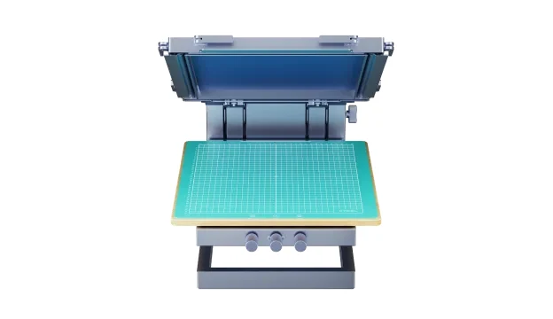

印製方式
先確認圖稿、承印物與預計數量，再討論印製、轉印及後續加工的搭配。
以網版與油墨進行圖案印製，適合討論布面作品與小量圖案製作。網版準備、油墨與承印材料需搭配規劃。

服飾印製、網版與熱壓應用，依數量與承印物規劃流程。
先確認圖稿、承印物與預計數量，再討論印製、轉印及後續加工的搭配。
提供使用的布料、圖案或轉印材料，確認相容耗材與操作條件。
一起規劃製版、印製、熱壓或後處理步驟，避免只選單一主機。
設備配置、可加工材質及實際效果依原廠規範、材料與操作條件確認。售價、供貨、版本與保固請洽詢鈞展科技。